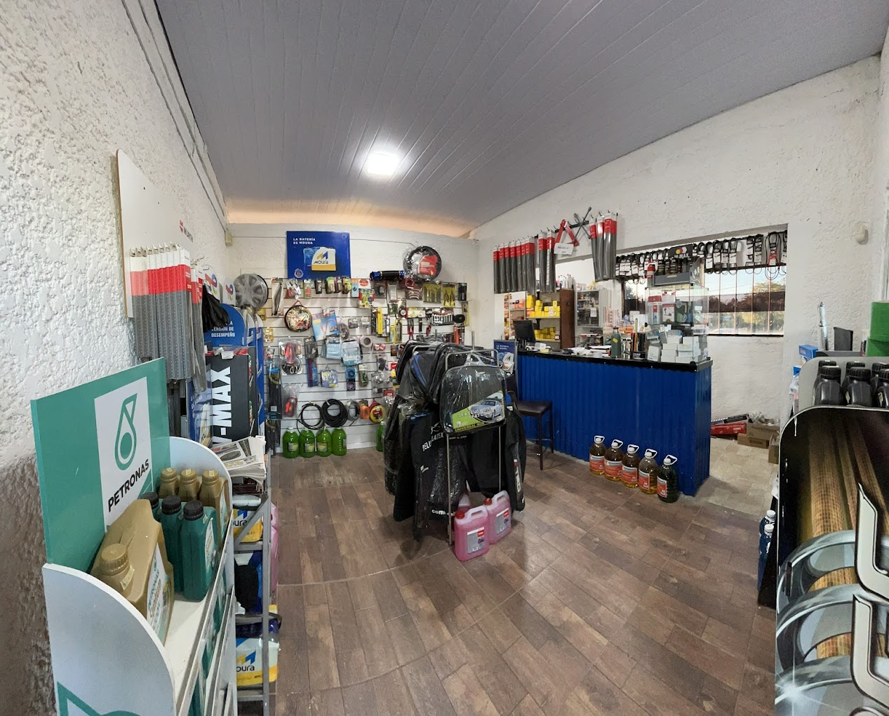

Servicios

-
Service, revisión de kilometraje con los protocolos establecidos por los fabricantes garantizando un correcto funcionamiento del vehículo.
-
Cambio de aceite y filtros.
-
Alineación y balanceo.
-
Limpieza de inyectores.
-
Reparación o cambio de discos y pastillas, cilindros, mordazas, bomba de frenos, válvulas compresoras, entre otros.